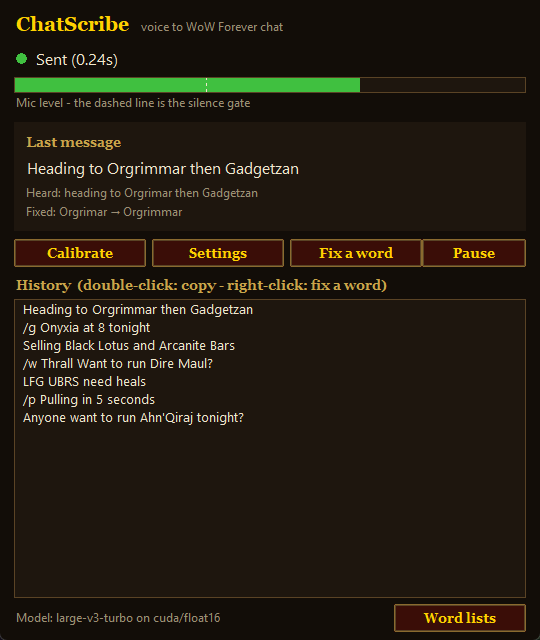

A WoW speech-to-text addon that actually works
WoW addons can't use your microphone, so no in-game addon can do voice typing. ChatScribe is a small companion app instead. It listens while you hold push-to-talk, recognises your speech with Whisper (OpenAI's open-source speech model) on your graphics card, fixes WoW names with a 1,200-word lexicon and sound-alike matching, and types the line into the WoW chat box. Nothing goes into your AddOns folder, and your voice never leaves your PC.
Features
Knows WoW names
Zones, raids, bosses, NPCs, spells, items and slang.
"Safiran" becomes Sapphiron, and "L F G U B R S" becomes LFG UBRS.
Channels by voice
"party chat…", "tell guild…", "whisper Name…", "raid warning…", "trade chat…", "slash dance". Say "scratch that" to cancel.
Fast and private
About 0.25 s per line on an NVIDIA GPU. No account, no cloud and no telemetry. It works offline after the first model download.
Learns your voice
A 2-minute calibration learns how your voice gets misheard, and you can right-click any message to teach it a word.
Chat-style punctuation
Question marks are added on their own. Spoken punctuation, "smiley face" → :), um and uh removed, and "level sixty" → level 60.
Accessibility
Chat without typing, which helps with RSI, carpal tunnel, limited hand mobility or playing on a controller.
Accuracy
| Word accuracy on WoW chat | |
|---|---|
| Plain speech recognition | 88.4% |
| ChatScribe | 99.6% (53 of 54 lines exactly right) |
Measured with the benchmark in the repository: 18 WoW chat lines read by three text-to-speech voices.
Get started in 2 minutes
- Download the zip, unzip it anywhere and run
ChatScribe.exe. - Wait for the one-time speech model download (about 1.6 GB).
- Click Calibrate, then in game hold Right Ctrl, talk and let go.
FAQ
Is there a speech-to-text addon for World of Warcraft?
Not inside the game, because WoW addons can't access your microphone. ChatScribe is a companion app that turns your speech into text and types it into WoW chat for you.
Can I talk to type in WoW chat?
Yes. Hold your push-to-talk key, speak, and let go. Say "party chat", "tell guild" or "whisper Name" first to choose the channel.
Is it free? Does it work offline?
It's free and open source (MIT). Recognition runs on your own GPU with no account and no cloud. The model downloads once.
Is it better than Windows voice typing (Win+H) for WoW?
For WoW chat, yes. It knows WoW names, matches misheard ones by sound, switches chat channels by voice, formats lines like chat and sends with one key.
Do I need an NVIDIA graphics card?
It's recommended, for speed. Without one, choose the small model in Settings. It runs on the CPU and is slower and less accurate.
Is it safe to use with WoW?
It only types text into the chat box, like pressing keys yourself, and each push-to-talk press produces one chat line. It doesn't read game memory, automate gameplay or change game files. Using any third-party tool is your own call.